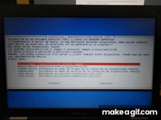
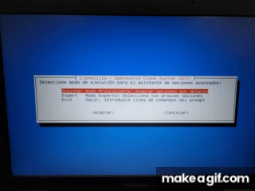
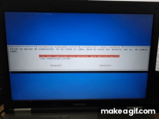

Para poder iniciar con este programa lo primero que necesitamos es crear un pendrive de arranque con clonezilla, para ello dependiendo del sistema operativo que estemos usando haremos dicho pendrive de una forma u otra.
En Windows usaremos el programa Rufus en el cual simplemente seleccionaremos el pendrive que vamos a hacer booteable y la imagen de clonezilla que previamente hemos descargado, le daremos a empezar y solamente tendremos que esperar a que el programa termine y ya tendremos nuestro pendrive booteable con clonezilla.

En caso de que nos encontremos en Ubuntu nos ayudaremos de la propia interfaz gráfica y de Ubuntu que incorpora una herramienta para hacer un pendrive booteable.
Le daremos click derecho a la imagen de clonezilla que hemos descargado, seleccionaremos abrir con otra aplicación y le daremos a grabador de imágenes de disco. Una vez estemos dentro seleccionamos el pendrive que queremos hacer booteable y esperamos a que termine.


Una vez tengamos nuestro pendrive de arranque creado lo que tenemos que hacer es iniciar clonezilla insertando dicho pendrive en la máquina que queramos utilizar. Nos deberá de aparecer la siguiente imagen, si te ha salido esto, significa que tu pendrive funciona correctamente.

Para continuar con el proceso de creación de imagen para la copia de seguridad podemos elegir entre la primera opción (que usará solamente el pendrive y no podremos quitarlo en ningún momento) o la segunda opción (con la cual el programa usará la ram del ordenador para llevar el programa y podremos retirar el pendrive). Elegiremos la que mas nos guste, cualquiera de las dos nos sirve, una vez seleccionada nos dejará seleccionar idioma y la distribución de teclado, eso lo haremos a gusto personal de cada uno.
Aquí ya estaremos oficialmente dentro de clonezilla, nos aparecerán varias opciones como podemos apreciar en esta captura de abajo, sin embargo, para crear la copia de seguridad nosotros elegiremos la que dice device-image, una vez seleccionada esta nos aparecerá una nueva ventana en la que escogeremos la opción local dev, dicha opción nos permite hacer el traspaso de la imagen del disco de forma local a un disco externo o a un pendrive.

Seleccionaremos el disco duro o pendrive al que queremos pasar la imagen de la copia de nuestro disco. Después de haberlo seleccionado nos preguntará si queremos hacer un chequeo y reparación del sistema de archivos o si deseamos omitirlo, en este caso le daremos a omitir para agilizar el proceso.
Ahora nos deberá de aparecer una nueva ventana preguntándonos por el asistente de opciones avanzadas, que en nuestro caso usaremos el modo beginner, una vez seleccionado nos aparecerá una nueva ventana en la que seleccionaremos savedisk, esta opción es la que nos permitirá guardar el disco local como imagen, acto seguido le daremos nombre a la imagen que vamos a hacer y después seleccionamos el disco de donde queremos crear la imagen que deberemos de seleccionar aquel que aparece con un asterisco.

A partir de aquí todas las opciones siguientes son por defecto, opciones como la compresión, comprobación y reparación del sistema de ficheros, cifrar la imagen y las opciones varias que tenemos una vez que haya terminado el proceso. Todas estas opciones las podemos ver en la imagen de aquí abajo más detenidamente, sin embargo, una vez hayamos pasado todas estas ventanas se nos deberá de abrir una ventana de texto parecida a una terminal en la que tendremos que darle a continuar para que el programa comience a realizar la imagen del disco.
